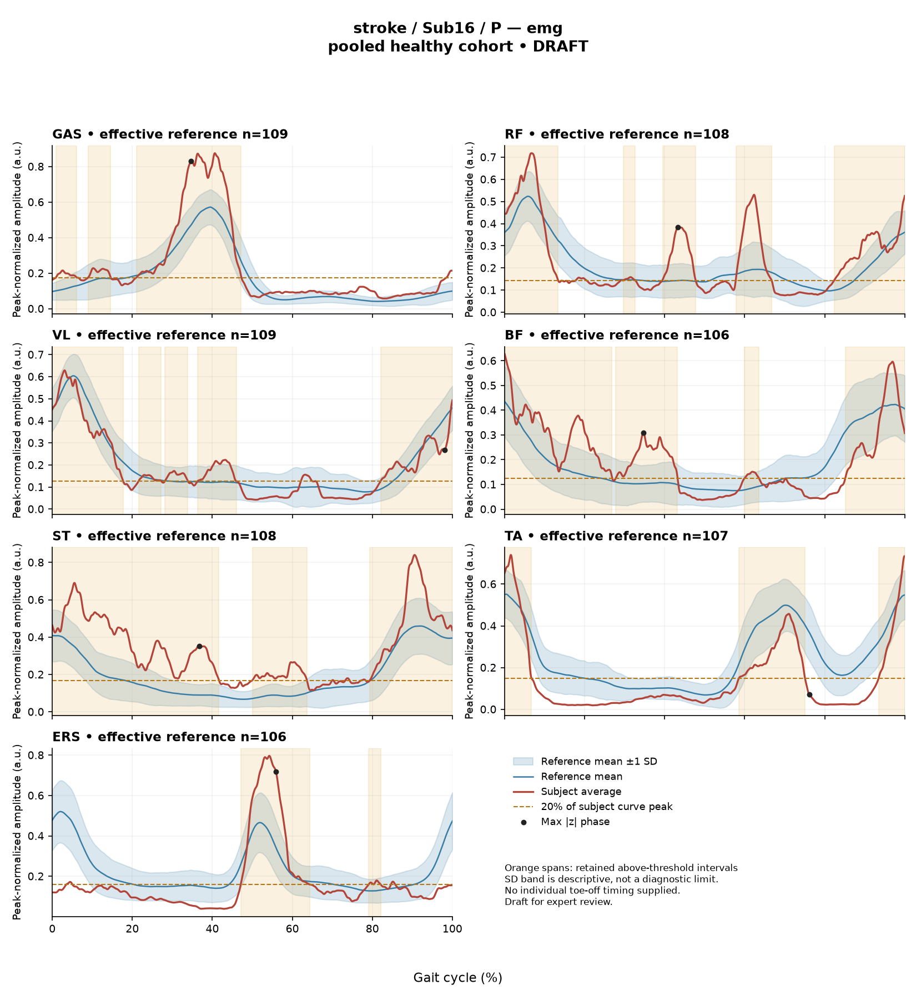
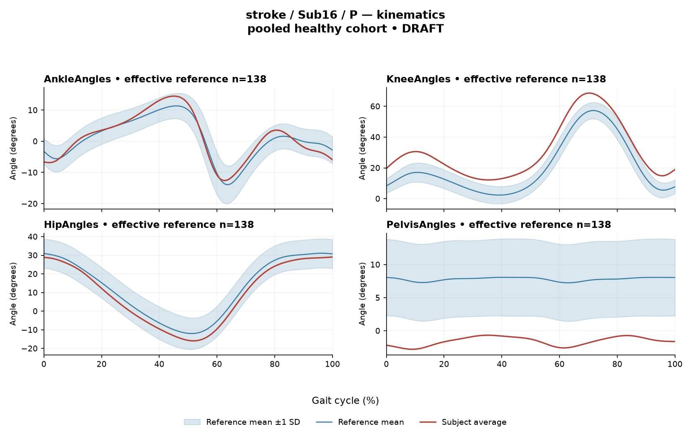

R996138AF1B212E33
rater2 / 122 of 150 / Case stroke_Sub16_P / Review row 123
Report: verbatim text
Text file for exact quotations**1. Objective Findings** Subject Sub16_P is a participant in the stroke group, with data collected from the paretic side. The analyzed gait cycle spans consecutive initial contacts (0% to 100%) of this limb. The participant’s gait speed is 1.36 m/s, with a cadence of 116.2 steps/min. The step length symmetry index is -5.1% according to the successive-footfall definition, indicating that the paretic-side step is shorter. The composite sagittal kinematic deviation score (GPS-like) is 7.39. **2. EMG Envelope and Threshold Findings** Analysis of the participant’s ensemble-averaged, normalized EMG envelopes revealed the following above-threshold intervals (regions where the mean envelope exceeded 20% of its own peak for at least 3% of the cycle): * **GAS**: Retained intervals at 1%-6%, 9%-15%, and 21%-47%; the mean envelope was above threshold for 39% of the cycle, with a peak normalized amplitude of 0.88. * **RF**: Retained intervals at 30%-33%, 40%-48%, 58%-67%, and 82%-13% (maintaining above-threshold continuity across the initial contact boundary); total envelope coverage 55%, with a peak normalized amplitude of 0.72. * **VL**: Retained intervals at 22%-27%, 28%-34%, 36%-46%, and 82%-18% (maintaining above-threshold continuity across the initial contact boundary); total envelope coverage 61%, with a peak normalized amplitude of 0.63. * **BF**: Retained intervals at 28%-43%, 60%-64%, and 85%-27% (maintaining above-threshold continuity across the initial contact boundary); total envelope coverage 61%, with a peak normalized amplitude of 0.63. * **ST**: Retained intervals at 50%-64% and 79%-42% (maintaining above-threshold continuity across the initial contact boundary); total envelope coverage 79%, with a peak normalized amplitude of 0.84. * **TA**: Retained intervals at 59%-75% and 94%-7% (maintaining above-threshold continuity across the initial contact boundary); total envelope coverage 30%, with a peak normalized amplitude of 0.74. * **ERS**: Retained intervals at 47%-64% and 79%-82%; total envelope coverage 23%, with a peak normalized amplitude of 0.80. The whole-cycle Falconer-Winter co-contraction index (CCI) for the TA and GAS normalized envelopes is 0.38. The whole-cycle CCI for RF and BF is 0.73. These interval limits and indices describe the behavior of averaged, thresholded envelopes and do not establish patterns of absolute neural activation, stride-to-stride muscular variability, or periods of inactivity outside the retained regions. **3. Kinematic and Reference Comparisons** Comparisons in this section are drawn against an un-matched pooled healthy reference cohort (up to 138 subjects). Although this participant’s gait speed (1.36 m/s) falls within the reference cohort’s self-selected speed range (0.80–1.79 m/s), deviations from this empirical reference cannot solely isolate stroke pathology, nor do they by themselves establish a disease effect or clinical diagnosis. Sagittal plane kinematic ranges of motion (ROM) and summary differences (Gait Variable Scores, GVS) from the reference are as follows: * **AnkleAngles**: ROM 27.1 degrees, GVS 1.84. * **KneeAngles**: ROM 56.4 degrees, GVS 10.83. * **HipAngles**: ROM 45.0 degrees, GVS 3.14. * **PelvisAngles**: ROM 2.1 degrees, GVS 9.38. The overall composite kinematic score of 7.39 is between the healthy reference cohort’s median (5.1) and 95th percentile (10.7). The maximum absolute z-scores (max |z|) indicate the point of largest standardized difference between the participant's average EMG envelope and the phase-specific healthy reference mean: * **GAS**: max |z| 3.4 (above the reference mean at 35% of the cycle). * **RF**: max |z| 3.1 (above the reference mean at 43% of the cycle). * **VL**: max |z| 1.5 (below the reference mean at 98% of the cycle). * **BF**: max |z| 2.8 (above the reference mean at 35% of the cycle). * **ST**: max |z| 4.6 (above the reference mean at 37% of the cycle). * **TA**: max |z| 2.2 (below the reference mean at 76% of the cycle). * **ERS**: max |z| 2.8 (above the reference mean at 56% of the cycle). The TA vs. GAS whole-cycle CCI (0.38) is situated near the healthy cohort median of 0.39 (2.5th–97.5th percentile interval: 0.24–0.59). The RF vs. BF CCI (0.73) also falls within its comparative reference interval (median 0.68, range 0.48–0.83). Placement within these reference boundaries does not inherently prove physiologically normal control or muscular co-activation. **4. Questions for Further Clinical Assessment** * Do clinical evaluations of the patient's gait present visually apparent changes in sagittal knee or pelvic motion that correspond with their respective Gait Variable Scores? * Is the relatively higher proportion of cycle coverage in hamstrings (ST and BF) reflective of an observable compensatory gait mechanism, or could this characteristic relate to surface measurement artifact or data normalization factors? * Are there clinically identifiable adaptations in the coronal or transverse planes that might contribute context to the measured sagittal joint variations and the shorter paretic step length? * Does physical examination reveal alterations in structural joint mobility, muscle tone, or resting posture that offer context for the reported kinematic ranges of motion?
Coverage rows
| Excel row | ID | Required content | Components |
|---|---|---|---|
| 701 | R037 | Describe walking speed 1.36 m/s and that it is within the stated reference speed range; this does not establish individual matching. | AND: displayed speed and that it lies within the supplied 0.80-1.79 m/s span AND that an in-range speed does not establish an individually matched reference. Optional: position within the span. One sentence may also serve the comparability half of G03. |
| 702 | R038 | Identify knee AND pelvis as the principal GVS differences AND distinguish the pelvic GVS difference from its small measured excursion (pelvic ROM 2.1 degrees). Exact GVS values are optional; identify the findings as reference-relative sagittal summary differences. | AND: knee AND pelvis AND contrast between pelvic GVS and small pelvic excursion (ROM 2.1). No offset direction, restriction or normative claim. Exact values optional. |
| 703 | R039 | Describe EITHER (A) the ST envelope above its phase-specific reference mean at approximately 37% of the analysis cycle OR (B) broad ST mean-envelope above-threshold extent spanning the cycle boundary. One complete route suffices. The displayed max |z| 4.6 and coverage 79% are optional anchors. | Route A: ST AND above-mean direction AND approximate location. Route B: ST AND broad detected above-threshold extent AND boundary spanning. Exact magnitude, coverage and segment endpoints are optional. A displayed 4.6-versus-4.61 comparison is permitted; it does not determine hidden unrounded classification or physiological normality. No separate uncertainty sentence is a coverage component. |
| 704 | R042 | Describe the supplied successive-footfall step-length index -5.1% and its meaning: the paretic step is shorter. | AND: displayed index and the direction supported by its sign. Optional: formula, definition wording. Acceptable phrasing for small displayed values: "a small difference with the paretic step slightly shorter/longer" (not a cutoff). Prohibited: restating the index as a percentage shortening (E01), severity grades, whole-gait symmetry generalization (E07 issue, not an omission). |
| 705 | G03 | Express a meaningful limitation of reference comparability AND why the comparison cannot establish disease effects or clinical diagnosis; for controls it cannot establish disease or overall normality. One statement may also support a case requirement. | AND: comparability and inference limitations |
Exact system input
Saved fileDraft a research gait-report interpretation for a physical therapist or physiatrist using only the supplied quantitative summary. This is a limited-evidence interpretation task, not diagnosis or treatment selection. Rules: - Describe the participant's actual group and side, available findings, and missing channels accurately. Healthy-group membership does not prove normal physiology; deviations from an empirical reference do not by themselves establish disease. - Treat detected EMG intervals and coverage as properties of an averaged envelope under the stated threshold and duration rule. Do not convert them into physiological onset, offset, duration, continuous contraction, or inactivity outside the intervals. You may describe reported coverage, retained intervals and boundary continuity at the mean-envelope level. Do not infer the same pattern in every individual stride. Say no below-threshold segment only when the supplied evidence establishes that; a rounded coverage value or no retained interval alone does not establish it. - Individual toe-off and matched muscle-specific timing references are not supplied in this task. Use percentages of the analysis cycle. When the input explicitly identifies an initial-contact boundary, you may name that boundary or describe numerical proximity to it. Do not assign stance/swing, loading response, pre-swing, mid-stance or another event to a percentage, or substitute a conventional 60% split. Anatomical muscle actions may be named, but do not map an interval to a gait-phase function such as clearance, push-off or weight acceptance. Do not characterize timing as normal, early, delayed or prolonged without the required evidence. - Respect the supplied normalization method. Relative envelope amplitude is not strength or force, and average curves do not establish stride-to-stride variability. - Report CCI as a whole-cycle overlap index of normalized EMG envelopes. You may compare it with the supplied empirical interval or a supplied median, including proximity to an endpoint. Do not invent an unavailable median. Being within that interval does not establish physiologically normal co-activation or normal muscle function; being outside it does not establish pathological co-activation, stiffness, impaired control or a diagnosis. CCI is not simultaneous activation time, muscular force or a phase-specific result. It depends on normalization and envelope methods; do not transfer values or thresholds from other studies or algorithms. - Describe GVS and GPS-like as summary differences from the stated reference. Neither localizes waveform direction or phase; ROM alone does not establish a clinical restriction without an appropriate comparison. Do not treat pooled calibration percentiles as matched leave-one-out normal limits. - Where using a reference comparison, convey both limited comparability and the inability to establish a disease effect or clinical diagnosis from that comparison. One clear explanation per report is enough; age and speed need not be recited as separate checklist words. A speed inside an overall range does not prove that an appropriate matched reference exists. Apply these limits to controls as well. - The location of maximum |z| is the largest standardized difference from the reference, not necessarily the time of peak envelope amplitude or a gait event. Above/below reference in an EMG row means relative to the phase-specific reference mean at that location, not relative to a healthy percentile limit. - Preserve numerical direction and the displayed precision. Do not invent values, clinical severity grades, statistical significance, or unavailable reference values. Descriptive comparisons with supplied values remain allowed. Near-boundary rounded values do not justify classifying hidden unrounded values. - Clinical follow-up questions may ask whether a mechanism or measurement issue exists; do not presuppose it has already been observed. Do not recommend treatment. If EMG is unavailable, section 2 may simply state that envelope timing, amplitude and CCI cannot be assessed. Reference-only plots do not provide patient EMG. Use exactly these four sections: 1. Objective Findings 2. EMG Envelope and Threshold Findings 3. Kinematic and Reference Comparisons 4. Questions for Further Clinical Assessment
Exact case input
Saved fileCandidate interpretation version: limited-evidence-v3.1-candidate
Draft the four-section report using only this subject's supplied evidence.
Metric definitions (read before interpreting any number below):
- All joint angles and ROM values are SAGITTAL PLANE only. Coronal/transverse data are not included.
- The released EMG curves are ensemble-averaged envelopes. For each participant and recorded muscle, normalization uses a shared maximum across the available strides before averaging; individual strides are not independently rescaled to their own peaks. This pipeline uses the released mean curves without further amplitude normalization. In the checked stroke release, the denominator is participant-, side-, and muscle-specific; it is not shared between sides. The local array audit verified 614 evaluable combinations, not all 700; 86 lacked valid nonzero paired samples. Amplitudes are relative envelope values, not absolute neural activation, force, or strength. Do not rank muscles as stronger or weaker from these amplitudes, or infer stride-to-stride variability from an average curve.
- Above-threshold intervals are the regions where the averaged envelope exceeds 20% of that curve's own peak, minimum retained interval 3% of the cycle (by sample count). An interval written as (X%-Y%) with X > Y wraps across the 100%->0% cycle boundary (envelope remains above threshold across the cycle-defining event). An onset of 0% is the analysis-window boundary, not necessarily a physiological onset. "No interval detected" means no region met the threshold + duration criteria; it does NOT mean the muscle is inactive or non-functional.
- CCI is the Falconer-Winter co-contraction index computed on the full continuous envelopes (2*common area / summed areas), so it can be non-zero even when the DETECTED burst intervals of the pair do not overlap (sub-threshold activity contributes).
- The composite kinematic deviation score is the RMS of the per-joint Gait Variable Scores over the sagittal channels provided ("GPS-like", not the validated 9-variable GPS).
- Step length symmetry index: 200*(paretic - non-paretic)/(paretic + non-paretic), in %. NEGATIVE means the paretic-side step is SHORTER. Two operational step-length definitions exist (successive-footfall: each heel's position at its own initial contact; instantaneous: both heels at the same instant) and give different values for some subjects -- the definition actually used is stated next to the symmetry value.
- "Max |z| deviation" is the LARGEST absolute z-score across all 1001 phase points of the cycle, comparing this curve to the healthy-cohort mean/SD at each phase. This is an extreme-value statistic, NOT a single-observation z-score: in this dataset every one of 109 healthy controls exceeds |z| = 2 on at least one muscle, and per-muscle healthy 95th percentiles for this statistic run 3.65 (ERS) to 4.61 (TA) -- higher still under leave-one-out. Do not label a value abnormal by the conventional 2-SD rule; use the healthy reference range given per muscle where provided.
- Healthy-cohort CCI reference (this dataset): RF-vs-BF median 0.68 (2.5th-97.5th pct 0.48-0.83); TA-vs-GAS median 0.39 (0.24-0.59). Composite score reference: median 5.1, 95th percentile 10.7.
- COHORT BACKGROUND (calibration context, not necessarily the exact reference used for this subject -- the actual reference composition is stated in a dedicated line with the subject data below): the full healthy cohort is 138 subjects for kinematics, effective n = 106-109 per muscle for EMG (29 controls have no usable EMG; completeness varies by age), pooling both body sides and all ages; it is not age- or speed-matched to this subject. A leave-one-out run uses one subject fewer than these counts.
- SPEED SUPPORT LIMIT (applies to most stroke subjects in this dataset): the healthy reference cohort's self-selected walking speeds span 0.80-1.79 m/s. If this subject's gait speed is below 0.80 m/s, NO speed-matched healthy reference exists in this dataset -- 41 of the 50 stroke subjects are below that floor. Deviations from the reference then conflate slow-walking effects with stroke-specific control changes, and the two cannot be separated from these data. Describe deviations from the reference as such; do not attribute them wholly to stroke pathology.
- Additional source fields are outside this input. Age, sex and gait events may be available in the release; time post-stroke, stroke clinical scores and a non-paretic-side designation apply only to the stroke cohort, as applicable. Do not claim every listed field exists for every participant. Distinguish not supplied, not applicable and documented absent recordings.
The released paretic-side cycle runs from initial contact of that limb at 0% to its next initial contact at 100%. The cycle boundary may be called initial contact; the endpoints are successive occurrences, not one instant. No intermediate event or phase boundary is supplied.
Model-visible information boundary: the summary contains mean-curve metrics and algorithm-detected intervals, not individual toe-off, matched normal muscle timing, stride-level variability, raw-signal quality checks, or expert plots. Information not supplied here must not be described as absent from the source dataset. Gait-cycle percentages alone do not identify gait phases.
Subject: Sub16_P (group: stroke, affected side: paretic)
Gait speed: 1.36 m/s (full community ambulator (>0.8 m/s)) [The ambulation label denotes a speed band only, not measured walking independence, safety or real-world community mobility.]
Cadence: 116.2 steps/min
Step length symmetry index: -5.1% (step-length definition: successive_footfall)
Composite kinematic deviation score (GPS-like): 7.39
Deviation reference actually used for this subject: 138 healthy subjects (pooled), 1001 phase points, source: main_cohort_excel.
EMG envelope findings:
- GAS: above-threshold interval(s) 1%-6%; 9%-15%; 21%-47%, 39% of cycle above threshold, peak normalized amplitude 0.88, max |z| vs healthy reference: 3.4 (above reference, at 35% of cycle)
- RF: above-threshold interval(s) 30%-33%; 40%-48%; 58%-67%; 82%-13% (wraps cycle boundary), 55% of cycle above threshold, above threshold across cycle boundary, peak normalized amplitude 0.72, max |z| vs healthy reference: 3.1 (above reference, at 43% of cycle)
- VL: above-threshold interval(s) 22%-27%; 28%-34%; 36%-46%; 82%-18% (wraps cycle boundary), 61% of cycle above threshold, above threshold across cycle boundary, peak normalized amplitude 0.63, max |z| vs healthy reference: 1.5 (below reference, at 98% of cycle)
- BF: above-threshold interval(s) 28%-43%; 60%-64%; 85%-27% (wraps cycle boundary), 61% of cycle above threshold, above threshold across cycle boundary, peak normalized amplitude 0.63, max |z| vs healthy reference: 2.8 (above reference, at 35% of cycle)
- ST: above-threshold interval(s) 50%-64%; 79%-42% (wraps cycle boundary), 79% of cycle above threshold, above threshold across cycle boundary, peak normalized amplitude 0.84, max |z| vs healthy reference: 4.6 (above reference, at 37% of cycle)
- TA: above-threshold interval(s) 59%-75%; 94%-7% (wraps cycle boundary), 30% of cycle above threshold, above threshold across cycle boundary, peak normalized amplitude 0.74, max |z| vs healthy reference: 2.2 (below reference, at 76% of cycle)
- ERS: above-threshold interval(s) 47%-64%; 79%-82%, 23% of cycle above threshold, peak normalized amplitude 0.80, max |z| vs healthy reference: 2.8 (above reference, at 56% of cycle)
Co-contraction indices:
- TA_vs_GAS: CCI = 0.38
- RF_vs_BF: CCI = 0.73
Joint kinematic findings (sagittal plane):
- AnkleAngles: range of motion 27.1 deg, Gait Variable Score 1.84
- KneeAngles: range of motion 56.4 deg, Gait Variable Score 10.83
- HipAngles: range of motion 45.0 deg, Gait Variable Score 3.14
- PelvisAngles: range of motion 2.1 deg, Gait Variable Score 9.38Reference card
Saved file# Reference context: stroke/Sub16_P Mean/SD reference: 138 controls; method pooled; exclusions: []. Effective reference counts: GAS=109, RF=108, VL=109, BF=106, ST=108, TA=107, ERS=106, AnkleAngles=138, KneeAngles=138, HipAngles=138, PelvisAngles=138. The exact system and user input files define what the model receives. The EMG and kinematic plots are supplementary expert evidence, not model inputs. The plotted mean plus/minus one SD is descriptive, not a clinical normal band. Negative lower EMG bands can result from mean minus SD; they do not imply negative recorded EMG. The max-|z| p95 span in the input is pooled calibration context. Complete muscle-specific LOO thresholds are not supplied; an appropriately indeterminate classification is allowed. Controls are excluded from their own mean/SD reference, but cohort-level calibration has prior reference-data reuse. It is not an independent matched clinical limit. GPS-like is a four-channel sagittal composite, not the validated nine-variable GPS. The pooled median/p95 background is not a matched LOO normality boundary. CCI uses continuous normalized envelopes over the whole analysis cycle. An empirical interval comparison does not establish normal muscle function. Threshold intervals and rounded coverage describe the averaged envelope. Rounded 100% coverage and one interval do not prove absence of short below-threshold gaps. Use the group-specific cycle and normalization provenance in the actual input. No individual intermediate gait events or matched normal muscle timing are supplied. Administrative age and published bilateral speed are not added to this input. Expert-visible plots do not justify requiring unseen direction, phase or morphology. For a new-case requirement, cite exact input evidence. Select clinically useful descriptive content without inferring a diagnosis or severity from rank alone.
Expert reference curves
Only text inputs were supplied to the model. Do not require curve-only findings.
EMG

Kinematics
